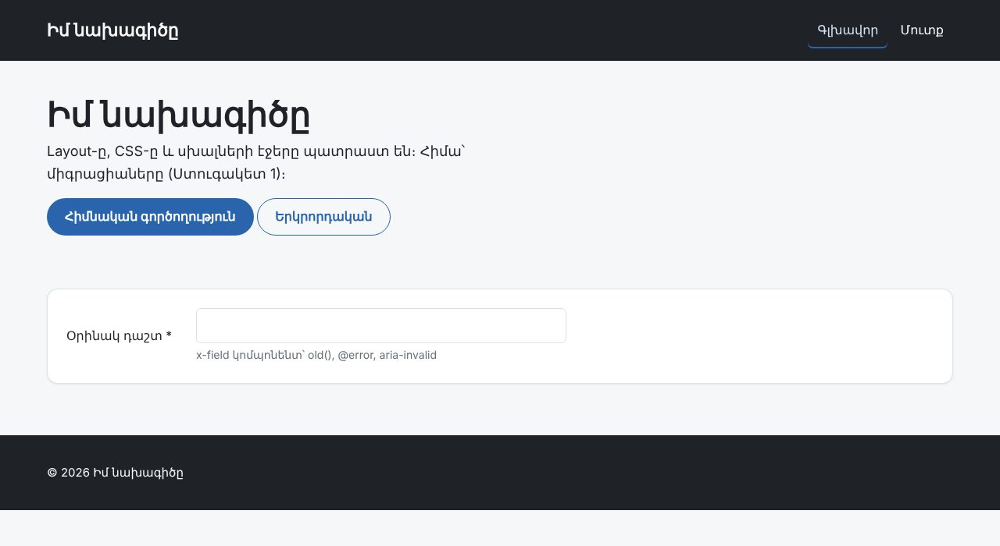
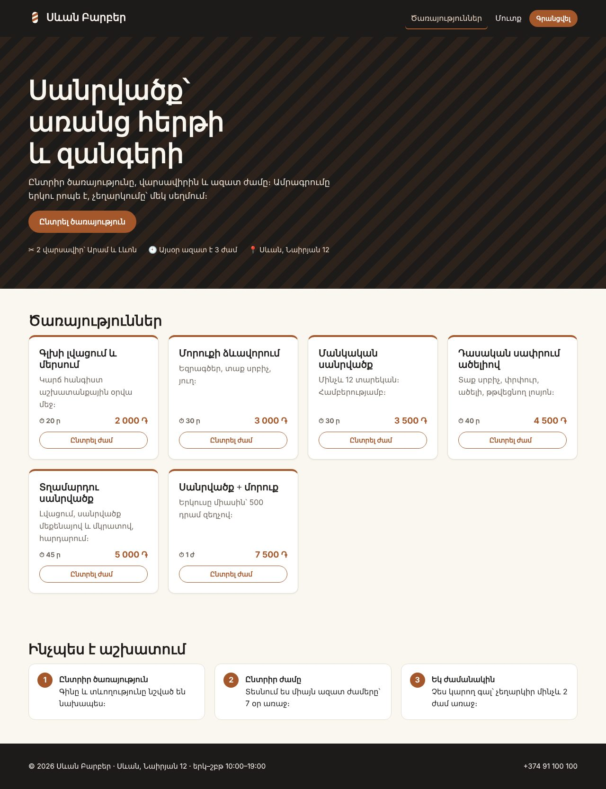

Վերջնական նախագիծ · շաբաթ 1 / 4 · ստուգակետ 1
Առաջին շաբաթը ամենաքիչ տեսանելին է և ամենակարևորը։ Արդյունքը մեկ էջ առաջարկ է, մեկ գծապատկեր և բազա, որը լցվում է մեկ հրամանով։ Ամեն հաջորդ շաբաթ կանգնած է այս մեկի վրա։
Շաբաթվա վերջում ունես համաձայնեցված թեմա, սխեմա, որ աշխատում է և դատարկ, բայց կոկիկ կայք։ Էջեր դեռ չկան․ կա բազա, որը լցվում է մեկ հրամանով, և layout, որի վրա կկառուցես մնացածը։


Սխալ սխեման առաջին շաբաթում ուղղվում է մեկ ժամում, երրորդում՝ մեկ շաբաթում, որովհետև դրա վրա արդեն կանգնած են կոնտրոլերները, շաբլոնները և seeder-ը։ Այդ պատճառով ստուգակետ 1-ում դասախոսը նայում է ոչ թե էջերին, այլ schema.md-ին և migrate:fresh --seed-ին։
| # | Ինչ ես անում | Ֆայլ | Դաս |
|---|---|---|---|
| 1 | Ընտրիր թեման և գրիր «դժվար ֆունկցիան» 5 նախադասությամբ․ ինչ կանոն, ոչ ինչպես | docs/proposal.md | — |
| 2 | Ուղարկիր առաջարկը դասախոսին մինչև առաջին ծրագրավորումը | — | — |
| 3 | Սխեմա՝ աղյուսակներ, սյունակներ, FK, UNIQUE, ամեն FK-ի համար ON DELETE և ինչու | docs/schema.md | PHP 8, 9 |
| 4 | Նոր Laravel նախագիծ, Fortify, .env՝ MySQL, APP_LOCALE=hy, timezone | .env, config/app.php | PHP 18, 21 |
| 5 | Միգրացիաներ՝ առնվազն 4 աղյուսակ | database/migrations/ | PHP 20 |
| 6 | Մոդելներ՝ կապեր, casts, scope-ներ, $fillable՝ առանց role-ի | app/Models/ | PHP 20 |
| 7 | Seeder՝ իրատեսական տվյալներ, բոլոր դերերի հաշիվներ | DatabaseSeeder.php | PHP 20, 22 |
| 8 | Layout և CSS-ի հիմքը (կամ starter/kit) | resources/views/layouts/ | PHP 19 |
| 9 | Git՝ առնվազն 6 commit, .env-ը չկա պահոցում | — | JS 17 |
starter/-ում կան proposal.md-ի և schema.md-ի ձևանմուշները և ոչ պարտադիր kit/՝ layout, CSS, կոմպոնենտներ, հայերեն սխալներ։ Kit-ը նույնն է ամեն թեմայի համար․ այն ամենը, ինչ արդեն գրել ես ՏեխնոՄարկետում, որ այս շաբաթը ծախսես սխեմայի վրա։
Ամբողջական օրինակը՝ example-sevan-barber/։ Այն աշխատեցված է իրական Laravel 12-ի վրա (տես բաժին 03)։ Նայիր դրան քո առաջարկը գրելուց հետո․ նպատակը ձևն է, ոչ թեման։
Հաճախորդը տեսնում է միայն ազատ ժամերը և ամրագրում մեկը։ Երկու հաճախորդ չպետք է կարողանան ամրագրել նույն ժամը, նույնիսկ եթե սեղմում են միաժամանակ։ Չեղարկված ժամը պետք է նորից ազատվի, բայց չեղարկման պատմությունը պետք է մնա։ Մեկ հաճախորդին՝ առավելագույնը 3 ակտիվ ամրագրում, որ մեկը չզբաղեցնի ամբողջ շաբաթը։ Հաճախորդը չեղարկում է մինչև այցից 2 ժամ առաջ, հետո՝ միայն զանգով։
Ուշադրություն դարձրու․ ոչ մի բառ «UNIQUE»-ի կամ «տրանզակցիայի» մասին։ Առաջարկը նկարագրում է կանոնները, իսկ լուծումը գալիս է սխեմայում։
users services time_slots
┌────────────────────┐ ┌────────────────────┐ ┌──────────────────────────┐
│ id │ │ id │ │ id │
│ name, email ⓤ │ │ name, slug ⓤ │ │ staff_id FK → users │──┐
│ phone │ │ description │ │ starts_at │ │
│ role (client) │ │ duration_min ≤ 60 │ │ ⓤ (staff_id, starts_at) │ │
│ password │ │ price │ └──────────────────────────┘ │
└────────────────────┘ │ is_active │ ▲ │
▲ ▲ │ deleted_at (soft) │ │ │
│ └────────────┴────────────────────┴──── staff ────────┼────────────────┘
│ ▲ │
│ bookings │ │
│ ┌────────────────────────┴───────────┐ │
└──────│ user_id FK → users restrict │ │
│ service_id FK → services restrict │ │
│ time_slot_id FK → time_slots restr.│───────────────────┘
│ active_slot_id ⓤ nullable ⭐ │ = time_slot_id, երբ booked/done
│ price ← գինը ամրագրման պահին │ = NULL, երբ cancelled
│ status (booked · done · cancelled) │
│ note (255), cancelled_at │
└────────────────────────────────────┘
ⓤ = UNIQUEԱմբողջ որոշումների աղյուսակը՝ docs/schema.md։ Ահա «դժվար ֆունկցիան» միգրացիայում․
// restrict․ ամրագրումների պատմությունը չի կորչում հաճախորդին կամ ժամը ջնջելիս
$table->foreignId('user_id')->constrained()->restrictOnDelete();
$table->foreignId('time_slot_id')->constrained()->restrictOnDelete();
$table->foreignId('service_id')->constrained()->restrictOnDelete();
// ⭐ «Դժվար ֆունկցիան»․ ակտիվ ամրագրման դեպքում = time_slot_id, չեղարկվածի դեպքում՝ NULL։
// UNIQUE-ը թույլ է տալիս շատ NULL, ուստի չեղարկված ժամը կարելի է ամրագրել նորից,
// իսկ երկու ակտիվ ամրագրում նույն ժամին բազան չի ընդունի՝ նույնիսկ միաժամանակյա հարցումներով
$table->unsignedBigInteger('active_slot_id')->nullable()->unique();
$table->unsignedInteger('price'); // գինը ամրագրման պահին — PHP Դաս 9
$table->string('status', 10)->default('booked'); // booked · done · cancelled
$table->string('note', 255)->nullable();
$table->timestamp('cancelled_at')->nullable();
$table->timestamps();
$table->index(['user_id', 'status']);Այդ դեպքում չեղարկված ամրագրման տողը ընդմիշտ կզբաղեցներ ժամը։ Կամ պետք կլիներ ջնջել այն (կորչում է պատմությունը), կամ ժամն այլևս չէր ազատվի։ active_slot_id-ը չեղարկելիս դառնում է NULL, իսկ UNIQUE-ը NULL-ները չի համեմատում։ Սա այն մտածողությունն է, որ սպասվում է քո «դժվար ֆունկցիայից»․ ոչ թե բարդ կոդ, այլ ճիշտ տեղ կանոնի համար։
/** Ակտիվ ամրագրումը՝ active_slot_id-ով։ Առավելագույնը մեկ է՝ UNIQUE-ի շնորհիվ */
public function activeBooking(): HasOne
{
return $this->hasOne(Booking::class, 'active_slot_id');
}
public function scopeFree(Builder $query): Builder
{
return $query->whereDoesntHave('activeBooking');
}// ---------- Ժամեր․ 3 օր առաջ → 7 օր հետո, 10:00–18:00, կիրակի՝ հանգիստ ----------
foreach ([$aram, $levon] as $barber) {
for ($d = -3; $d <= 7; $d++) {
$day = today()->addDays($d);
if ($day->isSunday()) {
continue;
}
$rows = [];
for ($h = 10; $h < 19; $h++) {
$rows[] = ['staff_id' => $barber->id, 'starts_at' => $day->copy()->setTime($h, 0), 'created_at' => now(), 'updated_at' => now()];
}
TimeSlot::insert($rows);
}
}Ամսաթվերը հաշվվում են today()-ից։ Եթե seeder-ում գրես '2026-11-05 10:00', մեկ ամիս հետո demo-ում ազատ ժամ չի լինի, և պաշտպանության օրը կայքը դատարկ կթվա։
Dropping all tables … 26.81ms DONE
INFO Preparing database.
Creating migration table … 8.73ms DONE
INFO Running migrations.
0001_01_01_000000_create_users_table … 29.76ms DONE
0001_01_01_000001_create_cache_table … 34.60ms DONE
0001_01_01_000002_create_jobs_table … 18.85ms DONE
2026_10_22_113409_add_two_factor_columns_to_users_table … 13.07ms DONE
2026_11_02_100000_create_services_table … 9.60ms DONE
2026_11_02_100100_create_time_slots_table … 23.47ms DONE
2026_11_02_100200_create_bookings_table … 37.23ms DONE
INFO Seeding database.+------------+-----+
| tbl | n |
+------------+-----+
| users | 13 |
| services | 7 |
| time_slots | 180 |
| bookings | 81 |
+------------+-----+
+-----------+----+------------------+
| status | n | with_active_slot |
+-----------+----+------------------+
| booked | 38 | 38 |
| cancelled | 9 | 0 |
| done | 34 | 34 |
+-----------+----+------------------+docs/proposal.md-ը՝ համաձայնեցված (կամ ուղղումներով)docs/schema.md՝ գծապատկեր և ON DELETE որոշումներ․ պատրաստ եղիր բացատրել ամեն մեկըphp artisan migrate:fresh --seed առանց սխալիphp artisan tinker-ում մեկ կապ․ օր. Booking::first()->slot->staff->namegit log --oneline՝ առնվազն 6 commit, git ls-files | grep .env՝ միայն .env.exampleԱսա։ Ստուգակետը գնահատում չէ, այլ վաղ նախազգուշացում։ «Չգիտեմ՝ վարձույթը առանձին աղյուսակ լինի, թե books-ի սյունակ» հարցը առաջին շաբաթում լավագույն հարցն է։
| Սխալ | Ինչ է լինում | Ինչպես ճիշտ |
|---|---|---|
role-ը $fillable-ում | Գրանցման ֆորմային role=admin → ադմին | Seeder-ում՝ $user->role = 'admin' ուղիղ վերագրմամբ (PHP Դաս 20) |
| Timezone-ը՝ UTC | «10:00»-ն պահվում է որպես 14:00 Երևանում, «այսօր»-ը սկսվում է 04:00-ին | config/app.php → Asia/Yerevan առաջին օրը |
| Ֆիքսված ամսաթվեր seeder-ում | Մեկ ամիս հետո demo-ն դատարկ է | today()->addDays($d) |
Ամեն ինչ cascade | Կատեգորիան ջնջելը ջնջում է պատվերների պատմությունը | Պատմությունը՝ restrict կամ soft delete, կախյալ մանրուքը՝ cascade |
| Գինը միայն ապրանքի աղյուսակում | Գինը փոխելիս հին պատվերները «թանկանում են» | Պատճենիր գինը պահի դրությամբ (PHP Դաս 9) |
| 10 աղյուսակ առաջին շաբաթում | Չորրորդ շաբաթում կեսը դատարկ է | 4–5 աղյուսակ, որոնք իրոք օգտագործում ես |
| Factory-ներ production seeder-ում | composer install --no-dev-ից հետո Faker-ը չկա → seeder-ը ընկնում է | Demo տվյալները՝ զանգվածներից, factory-ն՝ միայն տեղում (օրինակի seeder-ը) |
| Եթե խրվել ես | Նայիր |
|---|---|
| Միգրացիաներ, FK, ON DELETE | PHP Դաս 20, Տնային 20 |
| Սխեմայի նախագծում, գինը պահի դրությամբ | PHP Դաս 9 |
| Մոդելներ, կապեր, scope-ներ | ՏեխնոՄարկետ · Laravel՝ app/Models/ |